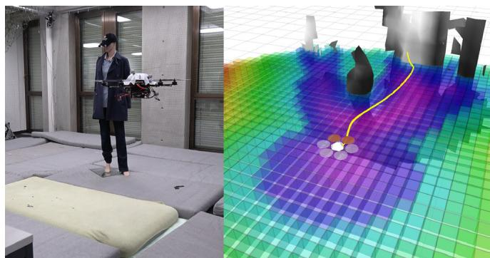
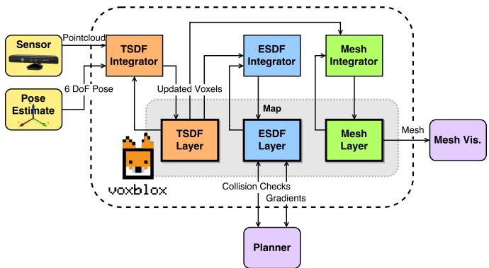
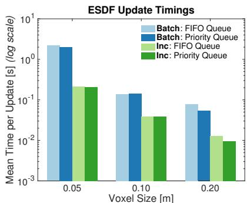
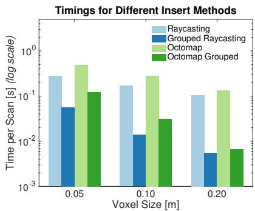
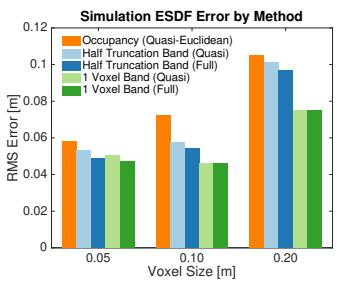

本节目标
读完你应该能：说清 TSDF 与 ESDF 的本质差别；讲清为什么规划器要距离梯度；复述三层架构与 $O(1)$ 查询；解释二次权重；讲清波前增量算法至少三个设计；并记住「一个数量级加速」这个数字。
和前面课程怎么接
接 0034：直接沿用 voxel hashing，并明确说 Octomap 的 $O(\log n)$ 不如哈希的 $O(1)$。接 0033：加权滑动平均与二次权重是同一族演进。接 0004：把 ESDF 接上——占据图答「能不能过」，ESDF 答「离障碍多远、往哪让」。接 0009：给探索型 MAV 做的地图。
1. 它想解决什么：地图要服务「动」
前两节（0033/0034）的地图都只为「看」：渲染、重建、AR 遮挡。这一节目标反转——MAV（微型飞行机器人）在未知环境要快速局部重规划，而轨迹优化类规划器（如 CHOMP）需要「障碍物距离 + 距离梯度」，而不是仅占据概率。
当时的做法是从 Octomap 之类的占据图批量（batch）算 ESDF，最大缺点是地图最大尺寸必须先验已知、不能动态变化。原文也批评已有 TSDF 方案：fixed-size voxel grid, which requires a known map size and a large amount of memory（§II）。本节目标：在动态增长的地图上、在线、单核 CPU、实时，并且同时保留可人读的 mesh 输出给远程操作员看。

怎么看这张图：这是本节头号图，一眼看出两种场长什么样、差在哪。灰色网格是 TSDF（表面附近的薄距离层），彩色切片是 ESDF（整个工作空间每点离最近障碍的距离，颜色越暖离障碍越近）。规划器用的就是这张 ESDF 切片——它覆盖全空间，而 TSDF 只在表面薄薄一层。
2. ★ TSDF 与 ESDF 的本质差别
本节的第一个核心，是原文 §I 对 TSDF 的定性：TSDF use projective distance, which is the distance along the sensor ray to the measured surface, and calculate these distances only within a short truncation radius。用大白话讲：
TSDF（投影距离）
告诉你「沿这条射线看，表面有多远」——只在表面附近（截断半径内）有效。它回答的是「正前方墙在哪」。
ESDF（欧氏距离场）
告诉你「离最近的障碍物多远」——欧氏距离，覆盖整个工作空间。它回答的是「我四周离墙各有多远、往哪边让最安全」。
为什么规划器要梯度？轨迹优化需要处处可微的碰撞代价：无人机不能只知「前面有墙」，还得知「往左挪 10 cm 碰撞代价降多少」。占据概率给不出方向（它只说某格被占的概率），而 ESDF 的梯度直接指向「远离障碍最快的方向」。所以 ESDF = 距离场 + 梯度，规划器才敢在线拐弯。
★ 接 0004 的收尾
第一季 0004 讲「landmark 地图 vs 占据栅格地图」。这里把链条补完：占据图回答「能不能过」（某格被占吗），ESDF 回答「离障碍多远、往哪边让」（带方向的距离）。从「感知存在」到「给出避让方向」，正是地图从「看」到「动」的跃迁。
互动判断
规划器为什么非要用 ESDF 而不是占据栅格（Octomap）？
3. 分类与三层架构
§II 把用于规划的地图表示分三类（注意 TSDF 自身也分多条扩容路线，和 0034 一致）：
| 表示 | 代表 | 特点 |
|---|---|---|
| occupancy（占据） | Octomap（octree） | $O(\log n)$ 查询；只答「被占与否」 |
| ESDF / EDT | 批量 GPU vs 增量 CPU | 给距离+梯度；原文主攻增量 CPU |
| TSDF | fixed grid / moving volume / octree / voxel hashing | 投影距离、截断内有效 |
三层架构（§III，务必讲）：TSDF 层 + ESDF 层 + mesh 层，各层有独立哈希表，由 integrator 串起来。关键强调：它直接沿用上一节 0034 的 voxel hashing，做到 $O(1)$ 插入查询——对比 Octomap 的 $O(\log n)$。这是 0034→0035 之间的硬连接：容器还是那个哈希，只是内容从「只有 TSDF」扩成「TSDF + ESDF + mesh」三层。

怎么看这张图：它把「三层架构」画活了。传感数据先进 TSDF 层融出距离场；integrator 再把 TSDF 更新传播到 ESDF 层（这就是下一节波前算法的位置）；mesh 层独立从 TSDF 提取表面给人看。注意三层各是一张哈希表，互不绑架。
4. 融合：二次权重补救
TSDF 层怎么把新深度融进去？有两种方式（§IV-B）：raycasting 与 projection mapping。原文指出 projection mapping significantly faster, but leads to strong aliasing effects for larger voxels（快得多，但大体素下严重走样）。为什么放弃更快的那条路？因为对 MAV 常用的大体素（0.20 m），projection mapping 的走样会让距离场出错，而 raycasting 更准——本文选了准，把速度问题用后面的 grouped raycasting 解决（见 §7）。
先抄式(1)的点观测距离：
$\mathbf x$ 是体素中心，$\mathbf p$ 是传感器点，$\mathbf s$ 是传感器原点；符号由「体素在相机与 $\mathbf p$ 之间还是之后」决定。然后是与 0033 同源的加权滑动平均（式 3–4）：
这和 0033 的 $\mathrm F_k$ 更新是同一族——都是「旧值×旧权 + 新测量×新权 / 总权」，权重上限 $W_{\max}$ 也对应 0033 的 $\mathrm W_\eta$（滑动平均）。本文的改进在权重本身：KinectFusion 主张常数权重 $w_{const}=1$（式 2），本文提出二次权重：
其中截断 $\delta=4v$、$\epsilon=v$（$v$ 为体素尺寸）。意思是：在表面前方用 $1/z^2$；在表面后方线性衰减到 0——用来压制那些「没被真正观测到、只是被射线穿过背后」的体素。为什么大体素需要这个补救？因为体素一大，射线容易「穿过一个物体背后」还误以为看到了，二次权重把这个不可信区域压下去，避免脏数据污染距离场。
5. ★ TSDF→ESDF 的波前增量算法
这是本节的技术高潮（§V-A Algorithm 1）。它基于 Lau et al. 的波前（wavefront）传播，在 26 邻域（体素的面/边/角邻居全算）上把 TSDF 的「表面附近距离」扩散成全空间的「欧氏距离」。
★ 至少三个设计
① 固定带（fixed band）：$|v.d|<\gamma$ 的 ESDF 体素直接取共址 TSDF 值且不可被修改，取代原始算法里「occupied/free」二值状态——这是本文对 Lau 方法的关键改造。② 两条队列：raise（新值比旧值大 ⇒ 该体素及其子树失效，置 $\mathrm{sign}(d)\cdot d_{\max}$ 后重新传播）与 lower（新固定体素进入或值下降 ⇒ 用邻居距离更新）。③ 每体素只存指向父节点的方向（准欧氏）或到父节点的完整距离（欧氏）。
补充两条：④ 新体素入图时把其所有邻居塞进 lower 队列，保证它被赋有效值。本文与 Lau 的差异：先全部 raise 再全部 lower（减少记账）、未知体素不更新（Lau 视为 occupied）、队列可选 FIFO 或按 $|d|$ 的桶式优先队列。
波前传播（wavefront propagation）是什么？打个比方：从已知的「岸边水位」（表面附近的 TSDF 真值）出发，像水波一圈圈向外推，每个新格子用「邻居的最小距离 + 一格边长」更新自己，直到全湖都有水位。这样每个点都拿到「到岸的最短距离」= 欧氏距离场。
★ 为什么全量重算不可接受
§VI-B-2 实测原话：building the ESDF incrementally leads to an order of magnitude speedups over the entire dataset——「一个数量级」的加速必须写上。意思是：每来一帧就从头算整张 ESDF，比增量更新慢约 10 倍；机器人等不起，所以必须只更新受影响的局部波前。

怎么看这张图：这张图就是「一个数量级加速」的实证。incremental（增量）的柱比 batch（批量）矮约 10 倍；不同队列里 FIFO 最稳。它证明 §VI-B-2 那句原话不是吹的——增量波前是实时 ESDF 的命门。
6. 误差界与 on-board 约束
这一节有块「工程质量」内容（§V-B）：投影距离相对真欧氏距离有误差，原文量化了它，给机器人定「要膨胀多少」。投影距离残差 $r_p(\theta)=d\sin\theta-d$，设 $\theta\sim U[\pi/20,\pi/2]$ 时期望 $\mathbb E[r_p]=-0.3014d$；准欧氏（只走 26 邻域的水平/垂直/对角）残差 $r_q(\phi)=d-\frac{d\sin(5\pi/8-\phi)}{\sin(3\pi/8)}$，最大值 $r_q(\pi/8)=-0.0824d$、期望 $\mathbb E[r_q]=-0.0548d$。
★ 原文自身的不一致
结论段写机器人包围盒应膨胀 8.5% + 0.3v，但 §V-B 算出来是 8.25%。这是原文两处的数字打架——读的时候要知道：膨胀比例取约 8.25%~8.5% 都指同一件事，结论段取整到 8.5%。
为什么强调 on-board（机上）？§I、§VII 说 MAV low payload and power budget, combined with fast dynamics, requires fast and light-weight algorithms——载重和功耗都紧，还要飞得快，算法必须轻。全套（状态估计、重建、规划、控制）跑在机上 Intel i7 2.1 GHz CPU，不用任何外部传感或基础设施；平台 Asctec Firefly + 前视双目与 IMU 同步。实验（§VI 通用设置）只用单线程四核 i7 2.5 GHz。这正是 0034「host→GPU 每帧一块受 CPU 限制」的延续——机上算力是硬约束。

怎么看这张图：它讲 grouped raycasting 的加速（接 §IV-B 放弃更快的 projection mapping 后怎么补速度）。把落到同一体素的点先分组求均值、只 raycast 一次，比朴素 raycasting 快达 20 倍，比 grouped Octomap 还快达 2 倍（注意是对数坐标）。这就是「选了准的 raycasting，又用分组把它变快」的解法。

怎么看这张图：它是 Fig. 8 的两张之一，证明「从 TSDF 建 ESDF 明显优于从 occupancy 建」——误差更低、或直接可用。这把本节「为什么不直接用 Octomap 批算」坐实了：TSDF 当跳板，ESDF 更准。
7. 实验数字与推荐套餐
§VI / §VII 的数字要抄准：数据集 cow（原始 Kinect + Vicon 位姿，Leica TPS MS50 扫描作结构真值）与 EuRoC（V1_01_easy，双目 + Vicon/IMU，同款 Leica 真值）。
TSDF 融合加速
grouped raycasting 比朴素 raycasting「up to 20 times faster」；比 grouped Octomap 还快「up to 2 times」（对数坐标）；TSDF 比 Octomap 更快，归因于 $O(1)$ vs $O(\log n)$。
精度对比
从 TSDF 建 ESDF 明显优于从 occupancy 建；lowest errors are found by taking a one-voxel-wide fixed band around the surface。全欧氏相对准欧氏，在 half-truncation 下误差降 8.23%/5.18%/4.72%（体素 0.05/0.10/0.20 m），但耗时增 201.0%/61.3%/33.9%——故推荐准欧氏。
MAV 实飞（§VII）
ESDF 更新 4 Hz，用 0.20 m 体素，每次地图更新后重规划，含 TSDF 构建 + ESDF 更新 + 重规划「well under the 250 ms time budget」。为让规划器可用，把机体 5 m 球内未知体素标为 occupied、1 m 球内未知体素标为 free（只改未知体素）。
原文推荐参数套餐
TSDF：20 cm 体素 + grouped raycasting + 二次权重带表面后方线性衰减。ESDF：一 voxel 固定带 + 准欧氏距离 + 距离优先队列。机器人包围盒膨胀 8.5% + 0.3v。系统开源。
注意那个关键权衡：全欧氏比准欧氏更准，但耗时暴涨（最大 +201%），所以本文推荐准欧氏——这呼应了 §V-B「准欧氏误差靠膨胀补偿」的结论。膨胀 8.5% 就是把准欧氏的方向性误差吃掉的工程代价。
8. 局限、OCR 修正与收尾
逐条讲清局限（务必如实点出）：
① 误差被承认并量化
投影距离永远是「等于或高估」真实欧氏距离，且只在局部平面假设下分析。
② 准欧氏方向性误差
最大在 $\phi=22.5^\circ$ 处，需靠包围盒膨胀补偿。
③ 未知空间 hack
规划器不能处理未知空间（无碰撞梯度），只能人为把 5 m 球内未知体素当 occupied——这是个工程 hack，要如实点出。
④⑤ 其他
④ 大体素（0.20 m）下 projection mapping 会 aliasing，故放弃更快路线；⑤ 假设位姿估计已知（its pose estimate is available）。
OCR 提醒
式(1) 末尾的 `( 1 )` 是公式编号被吞进公式体；`occupacy` 应为 occupancy；`behing` 应为 behind；Algorithm 1 里大量 `v.d`、`v.direction`、`v.observed` 丢失了下标 T/E（应为 $v_{\rm T}$ 或 $v_{\rm E}$）。读代码块时注意补回。
收尾：模块四「空间表示」到这里收尾——从 0033 的 TSDF（看），到 0034 的稀疏容器（大场景），再到 0035 的 ESDF（动），地图完成了「能存 → 能撑大 → 能规划」三步。下一模块换一条完全不同的路：不再用体素，而是把场景塞进神经网络的权重里——也就是 0036 要讲的 NeRF。
课后练习
展开查看答案
练习 1：用大白话区分 TSDF 与 ESDF，并说明规划器为什么非要 ESDF 的梯度。
答：TSDF 是「沿射线看表面有多远」（截断内有效），ESDF 是「离最近障碍多远」（全空间欧氏）。规划器（如 CHOMP）要处处可微的碰撞代价来在线拐弯，占据图只答「被占与否」给不出方向，ESDF 梯度直接指向「远离障碍最快的方向」。
展开查看答案
练习 2：Voxblox 的三层架构是什么？为什么说它和 0034 是硬连接？
答：TSDF 层 + ESDF 层 + mesh 层，各层独立哈希表、由 integrator 串起。它直接沿用 0034 的 voxel hashing，做到 $O(1)$ 插入查询，对比 Octomap 的 $O(\log n)$。容器还是那个哈希，只是内容从单一 TSDF 扩成三层。
展开查看答案
练习 3：本文对 KinectFusion 的常数权重做了什么改进？为什么大体素需要它？
答：提出二次权重 $w_{quad}=1/z^2$，并在表面后方（$-\delta<d<-\epsilon$）线性衰减到 0、更后方为 0；截断 $\delta=4v,\epsilon=v$。大体素下射线易「穿过物体背后」误观测，二次权重压制这些未被真正观测的体素，避免脏数据污染距离场。
展开查看答案
练习 4：TSDF→ESDF 的波前增量算法，至少说出三个设计点；并复述那个必须写上的数字。
答：① 固定带 $|v.d|<\gamma$ 直接取共址 TSDF 且不可改，取代 Lau 的 occupied/free 二值；② raise / lower 双队列；③ 每体素只存父节点方向（准欧氏）或完整距离（欧氏）。另：先全 raise 再全 lower、未知体素不更新、队列可选 FIFO 或按 $|d|$ 桶式。§VI-B-2 原话：增量比全量重算快「an order of magnitude」（约 10 倍）。
展开查看答案
练习 5：把 ESDF 接回第一季 0004：占据图与 ESDF 分别回答规划里的什么问题？并指出本文一个被如实点出的工程 hack。
答：占据图答「能不能过」（某格被占吗），ESDF 答「离障碍多远、往哪边让」（带方向距离）。工程 hack：规划器处理不了未知空间，本文把机体 5 m 球内未知体素强行标为 occupied——这并非理论优雅解，而是实用补丁。